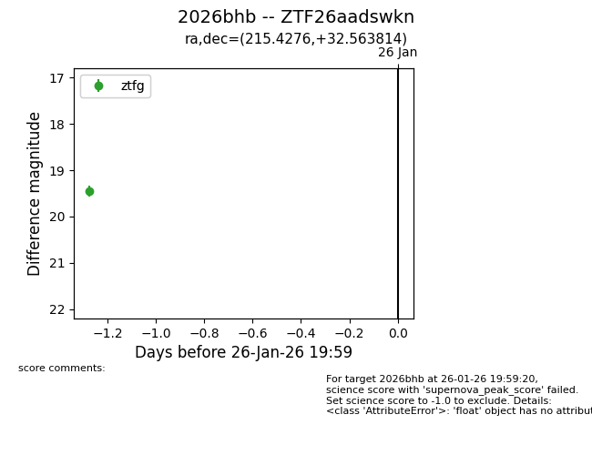
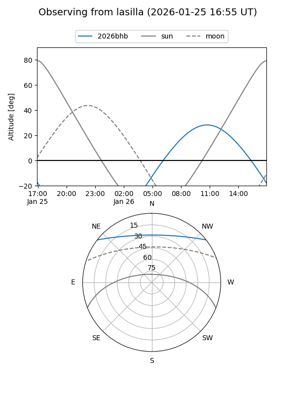
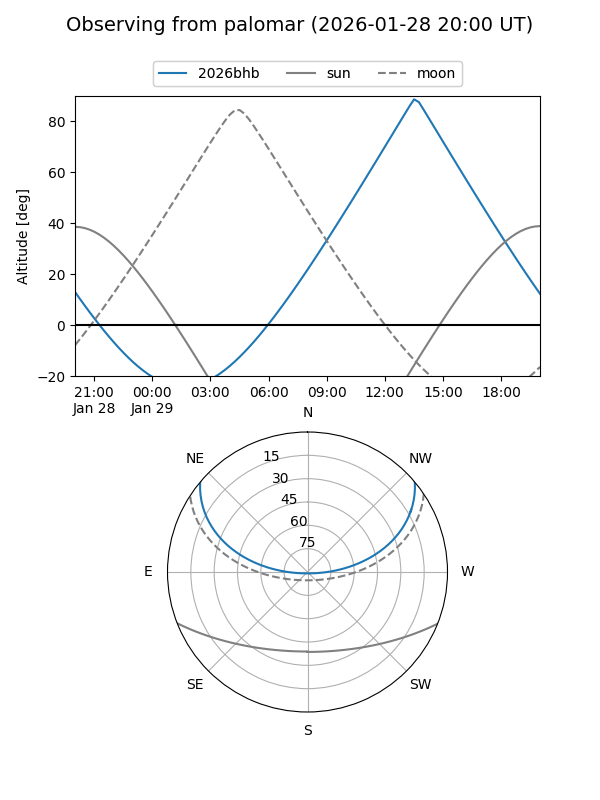

2026bhb
Target 2026bhb at 2026-01-27 00:26
Aliases and brokers:
FINK: link
Lasair: link
ALeRCE: link
TNS: link
YSE: link
alt names
ZTF26aadswkn (ztf,fink_ztf)
2026bhb (tns,yse)
Coordinates:
equatorial (ra, dec) = 215.4276,+32.56381
equatorial (HMS+DMS) = 14:21:42.63,+32:33:49.73
galactic (l, b) = (53.9310,+69.72918)
Flags:
Photometry:
last ztfg=19.45
1 ztfg detections
Lightcurve

Visibility


Additional plots